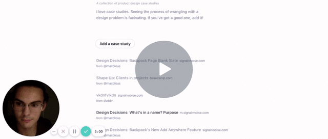
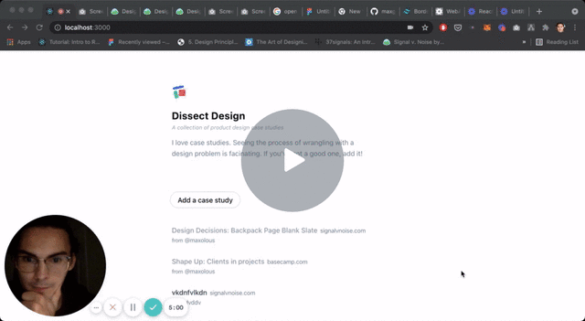
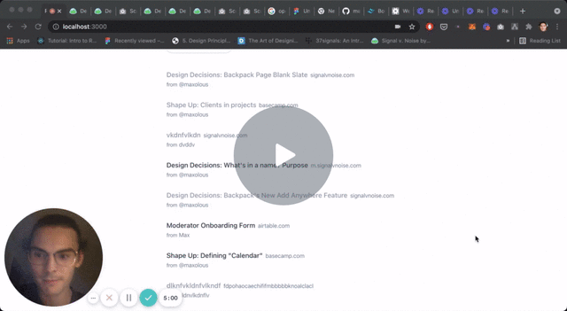
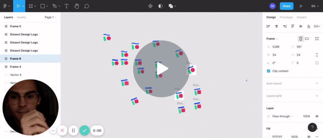
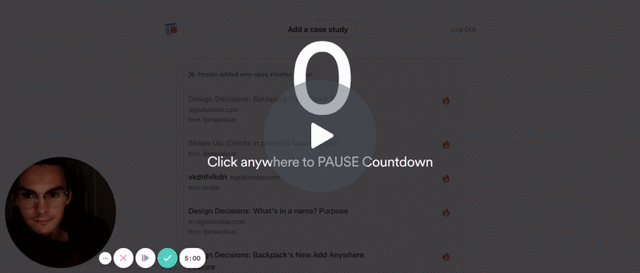

Why visited links are inaccessible (and why that's ok)5m

Why there's no link to the admin login page5m

Why case studies don't have a "By" line4m

How I designed the Dissect Design logo4m

Why I didn't make a new form for the admin section2m